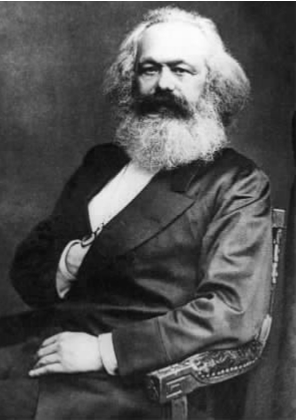

《结构转型》面世之后近二十年，哈贝马斯出版了第一部阐明其成熟理论的主要作品——《交往行为理论》。两部作品中间相隔的二十年绝非哈贝马斯的沉默期。事实正好相反，在这期间，哈贝马斯的创作尤其活跃，出版了好几部重要作品。如果说《结构转型》标志着哈贝马斯精神成长期的结束，那么之后几部作品则是他的探索之旅。在精神的征途上，哈贝马斯在他以前并不熟悉的黑格尔-马克思哲学传统中重新补课，定位了自己。他是通过提出三条相关的思路做到这一点的。
20世纪60与70年代期间，哈贝马斯对马克思及其思想遗产进行了长期的批判性研究。他的研究主要聚焦于马克思的理论假设：劳动是人类自我实现的基本范畴；人的自由可以意味深长地被视同生产力的解放和生产关系的变革。
正如法国社会理论家西蒙娜·韦伊（1909—1943）等前人所指出的，上面设想的自由并不能给人类带来解放、结束社会压迫。人与人的关系、人与人的交往不能混同于劳动和工作，因为后者是主客体之间的工具性关系，仅此而已，但是前者却是主体与主体之间的关系，主要是非工具性的关系。针对这个问题，哈贝马斯开始了对规范性结构的历史变革以及道德意识历史发展的研究，以此作为对马克思主义思想的补充和纠正；在他看来，马克思主义过于关注生产方式的发展了。通过这些研究，哈贝马斯获得的对社会的、人类交往的认知，要比马克思主义理论视野所能容纳的丰富得多。

图8 卡尔·马克思。作为马克思主义社会理论家，哈贝马斯对马克思的社会理论持严厉批判的态度。
在他学术的第二个阶段，哈贝马斯对威廉·詹姆斯（1842—1910）、约翰·杜威（1859—1952）、乔治·赫伯特·米德（1863—1931）、查尔斯·桑德斯·皮尔斯（1839—1914）等创立的美国实用主义传统，和从威廉·狄尔泰（1833—1911）到汉斯-乔治·伽达默尔（1900—2002）的德国阐释学传统产生了兴趣。这两种传统并非毫无关联，它们有一个共同的重要假设：哲学必须同现实生活发生并保持联系。哲学理论和概念必须对活生生的人在真实世界中的生活和经验产生影响，如此才有存在的理由。
第三，在批判马克思主义、研究阐释学和实用主义的同时，哈贝马斯开始了对科学、技术以及科学主义、实证主义思维方式的批判。虽然哈贝马斯比阿多诺和霍克海默受到了来自维也纳学派逻辑实证主义的更多影响，他对所有知识，尤其是社会知识，必须服从自然科学准则这一观点仍持批评态度。最终，哈贝马斯形成了一个观点，认为不同类型的知识——理论的、实践的、批判的——产生于不同背景，并服务于不同的人类愿望。理论知识建立在人类用技术控制自然的愿望上，实践的、道德的知识则建立在人类互相理解的意愿上，而社会批判理论和心理分析则是分别建立在集体和个人对于获得解放、摆脱幻觉、拥有自主权和实现美好生活的愿望之上。
虽然孕育着典型的哈贝马斯式主题，这些早期作品现在看来更多地具有传记和历史意义。通过《交往行为理论》（1981）一书，哈贝马斯的广泛影响力开始渗入一个完整的社会理论体系；从这一体系出发，他的社会、道德、政治理论得到了展开。这本书主要探讨社会学家马克斯·韦伯（1864—1920）、埃米尔·涂尔干（1858—1917）、塔尔科特·帕森斯（1902—1979），探讨黑格尔-马克思主义者乔治·卢卡奇（1885—1971）以及阿多诺和霍克海默的批判理论。这种探讨并不是文献综述。哈贝马斯采用了重建而非历史的方法，批判地借用了各种竞争的理论和历史先例。在为这种方法辩护时，哈贝马斯申明了他的主张：社会科学的范式（与自然科学的范式不同）相互之间并非历史承接关系；社会科学家并不因为偏好某个更好的理论而放弃原先的理论，因为社会理论之间是竞争的、可相互替代的关系，即似乎“具有平等地位”（《交往行为理论》上册，第140页）。相应地，所谓好的社会理论的一个标准，就是在何种程度上该理论能够与先驱理论和竞争理论相衔接，既阐明、保留它们的成功之处，又能补救它们的缺陷。为此，哈贝马斯提出了所谓的“系统目的之理论历史学”：正是这种结构精巧的综合性方法论，成就了哈贝马斯主要作品之宏富，也造成了这些作品令人生畏的冗长。
所以，我无意探讨哈贝马斯对于社会理论的历史的阐发，因为其本身可能带有相当的个人偏见；在此我准备讨论哈贝马斯著述的系统性意图。在《交往行为理论》一书中，他的直接目的就是要解决三个问题，在他看来这三个问题使属于上述传统的思想家们陷入了困境。
1.社会科学中意义理解的问题
社会科学中意义理解的问题就是如何解释人类行为（或者说如何理解人类行为的意义）的问题。这里所谈的意义对应着德语中的Sinn。对于20世纪的读者来说，Sinn一词作为术语有两个截然不同的用法。威廉·狄尔泰等人首先使用了这个词，用它来表示人类行为的象征性意义。这里，它与短语“生活的意义”中的“意义”是同一个意思。但是，容易引起误解的是，戈特洛布·弗雷格（1848—1925）又用同一个词Sinn来表示词或词组所指称的对象被归入主项的方式。弗雷格区分了内在于语言的词的意义（Sinn）和该词处于外在世界的所指（Bedeutung）。“晨星”与“晚星”含义不同，但是两者都指金星这一行星。不过，我们暂时可以把Sinn的弗雷格式用法放到一边。
狄尔泰认为，人文学科（或Geisteswissenschaften），比如历史、哲学、法学、文学，是与人文研究有关的学科，它们在方法论上与自然科学并不相同。人文学科研究的是理解人类社会的方式，而自然科学必须解释外部事件或自然现象。狄尔泰认为，自然科学的、因果式的阐释不足以提供对人类心智和精神生活的理解。借助由经验观察所支持的理论，科学从外部解释事物；但是，人类行为还必须借由主观经验的立场从内部加以把握。比如，科学可以对人类身体的运动从物理学和生物力学的角度作出充分解释，但它却无法告诉我们奔跑这一行为的任何意义；它无法让人知晓，跑过我们身边的人是在赶时间，是在逃跑，还是在锻炼。要理解这一行为的意义，我们必须根据那个奔跑的人的主观经验来阐释。
狄尔泰之后，韦伯同样认为，必须把对人类行为的外部观察同对人类行为“内在”主观意义的理解结合起来。要实现后面这一点，就必须在与该行为相关的人类目的、价值观、需求和欲望的背景下去阐释人类行为。韦伯坚持认为，如果行为可以与恰当的目的和手段联系起来，即该行为可以被理解为具有动因，这一行为就在主观上具有意义，因而是可以理解的。如果不是这样，行为便毫无意义 ，和大部分动物习性无所区别，只能被解释为对外部刺激的反应。韦伯把对人类行为意义的追问，同对人类行为动因的探索联系了起来。
韦伯的行为理论较狄尔泰的理论自有其优点，同时也有很多缺陷。韦伯认为，阐释者只有移情式再现或复制被阐释对象的主观心理活动，才能理解被阐释对象行为的意义；但是，韦伯并没有充分说明这种移情式的理解到底是什么。韦伯对于行为持有一种二元论的观点，认为人类的内心世界是与人类外在的身体相分离的，所以身与心的关系在本质上依然是神秘的。结果，韦伯无法说明是什么条件约束了对于行为意义的阐释；这也意味着他无从解释，为什么行为人对于理性和非理性行为的判断可以与行为阐释者的判断相一致。因而，韦伯最终不能说明，为什么一个行为的意义可以在时光变迁中保持稳定并且经得起检验。
切入这一系列问题的一个更有成效的方法，是弄清哪些是行为人的主观信仰、欲望和态度，哪些是他们客观的“陈述性”内容。这样做了，我们就可以通过将行为人的主观目的或意图重构为实践推理的一个例子，来理解行为的意义。
以上推理表明，在上述情形下史密斯有理由去捡木柴、劈柴火。作为阐释者，如果我们假定史密斯对此推理过程的理解促成了他去捡柴劈柴的行为，我们便可以基于其外在行为表现，对其行为的意义获得充分的理解。史密斯行为的意义取决于从一到四几个命题的真实性，也取决于达到第五步的推论的有效性，这一推论既独立于史密斯也独立于阐释者的心理状态。
现在，这个接近标准的阐释行为的方法以韦伯的说明解决了问题。虽然哈贝马斯没有采取这个方法，他还是同意行为意义理论取决于语言意义理论，并赞成下列观点：
虽然如此，在哈贝马斯的眼里这个标准方法还是有缺陷，因为它错误地假定了人类是需求和欲望的前个体化的和前社会的载体。此外，它还假定每一个个体的人都是从个人的观点出发工具性地运用理性，因此公共的、共有的意义不得不依赖于私人的、个体的理性。最终，该方法抛弃了狄尔泰阐释学式的和韦伯心理学式的“意义”（Sinn）观念，而采用了与弗雷格式的“所指”（Bedeutung）更为接近的观点。与此相对，正如我们在下一章将会看到的，哈贝马斯认为语言学意义不能被简化为命题的真实性条件。
2.非理性与意识形态批判的问题
路德维希·费尔巴哈（1804—1883）和卡尔·马克思之后的社会理论家都问过一个问题：为什么行为人那么心甘情愿地维护、复制那些妨碍甚至是阻挠他们实现自身利益的社会制度？为什么穷人、边缘人群、受压迫者会遵从那些制度与规则，不论它们是宗教的、经济的还是政治的，正是这些制度与规则将上述人群推入贫穷境地、将他们边缘化并且压迫他们？这些社会理论家对此的回答是：这些社会群体之所以会作出这样非理性的行为，是由于他们对于自己真正的利益是什么抱有错误的信念。马克思用“意识形态”（第一章中我们已经接触到了）这个术语来表示这样一种错误的信念。他已看出，作为社会哲学家，仅仅让受压迫的人意识到他们错误的信念是不够的，单凭用正确信念来取代错误信念不能带来社会变革。正如柏拉图曾说的，这不是一个把光线注入盲人之眼的问题。社会（对于马克思来说则是经济结构）有一种特质，能够使身在其中的人吸纳并追随这些意识形态，不论社会哲学家付出怎样的努力来为人们打破幻象。更糟的是，这些社会意识形态的长期存在对其母体——压迫性的社会制度——为虎作伥地起到了复制和支撑的作用。马克思主义社会理论家所面临的实践问题，就是要弄清并改变制造意识形态的机制，正是这些机制使人的所作所为损害了自己的真实利益。
这样的解释策略对人不无直觉上的吸引力，但缺陷也是存在的。一方面，马克思主义者在对意识形态进行批判时，必须为自己找到关于什么是意识形态发生机制的可靠信息，必须很好地解释，为什么他人的信息都容易受意识形态的蒙蔽而出错，唯独马克思主义者自己的不会。意识形态的批判者有两个选择。第一个选择，他使自己的理论免于被怀疑为意识形态幻觉。要做到这一点，他必须能够不受欺骗，对骗局的发生有足够的了解，从而能够避免错误观念的形成。（当我们了解纸牌魔术的玩法之后，就不会再认为这是魔法）。第二个选择，他不使自己的理论免受怀疑；在此情形下，就没有更多的理由对意识形态的批判者比对意识形态本身持有更多的信任。面对两难的困境，霍克海默选择了前者。根据其独创的批判理论观念，批判理论的跨学科性、反应性和辨证性应该可以使其免受意识形态的影响，从而使理论家对社会现实产生独有的洞察。类似地，阿多诺曾经宣称，由于成长过程中的一次意外，他幸运地对意识形态产生了免疫力。然而，批判理论家依旧身处尴尬境地：制造幻觉的社会机制越是深入，越是凶险，他们的主张就越不可能不受这种机制的影响。
另一方面，现在人们已普遍同意，意义的阐释必须建立在一个假设之上，即人总体上是理性的，且他们的信念大体正确。如果阐释者愿意接受在阐释对象中广为传播的错误和非理性，她实际上也就接受了太多对于阐释对象的行为的可能解释。（也许跑过你身边的那个人认为有一头看不见的熊在追赶自己。）这样一来，阐释者就失去了任何可靠的途径来确认哪种阐释是正确的，因而也没有途径去理解相关行为的意义。意识形态幻觉的观念如果不进行自我消解，就无法延伸至广泛的层面。假如过于随意地将许多东西归因于非理性，社会就将变得无法理解。正如我们在第四章中将看到的，哈贝马斯的社会理论回应了这个问题，他的做法是通过对交往行为和工具行为的区分来重铸意识形态观念以及与之相关的意识形态批判。对哈贝马斯而言，问题的答案并不在于很多人在自己没有意识到的状态下采取了非理性的做法，而在于他们由于受到经济、行政体制的塑造，表现出某些工具理性的行为特征。
3.社会秩序的问题
与很多理论前辈一样，哈贝马斯对于社会秩序如何可能的问题颇感兴趣。这个问题常以托马斯·霍布斯（1588—1679）曾用的发问形式出现。霍布斯探究的是，具有可预测性的稳定社会秩序是如何从众多单个分散的个人的行为中产生的，这些个人当中只有极少数互相熟识，只有很少一部分人偶尔能通过明确的协定来协调各自之间的行为。霍布斯给出的答案是，社会秩序产生于法律和全能统治者的权威，并由武力和凛凛刑威作后盾。
对社会秩序难题的霍布斯式解决所带来的问题已为人熟知。从个人的角度来看，违法、不服从社会规范的预期成本——惩罚——有时会远远小于这样做所带来的利益，在此情形下违法而非遵从法律才是合理的选择。工具性社会理论，即声称服从已有法律总能给每个人带来好处的理论，不能解释“搭便车”问题，无法说明为什么人们在违反法律似乎是合理选择、自己能从他人对法律的服从中获益的时候，还会去或者还应该去遵守法律。因此，社会秩序的难题并没有得到完全的解决。
面临这样的诘难，哲学家于是转向社会契约理论寻求社会秩序问题的答案。社会契约理论主张，社会秩序取决于明晰或默认的契约关系网络。然而，契约理论同样难以解释那些应该遵守契约条款的人们是何时并如何达成这一契约的，虽然这种解释并非完全不可能。此外，正如涂尔干所指出的，并非所有契约性的社会内容都已写入了契约。契约的观点并没有解释社会规则和规范为何存在，而是预设了一整套的社会规范，尤其是那些把尊重契约列为条件的规范早已存在。
涂尔干自己解释社会秩序的方式，是假设行为人遵从组成社会集体道德意识的规范。涂尔干认为他们这么做是出于积极和消极的两方面原因。通过社会化过程，他们逐渐将特定的制裁同违反规范联系了起来，并学会通过自觉行动避免受到这样的制裁。同时，他们逐渐习惯认同于或准备认同于他们所生活的社会的集体道德意识。美国社会学家塔尔科特·帕森斯发展了这样的观点，并形成了更为深奥的理论，认为成体系的规范和价值观念促成了社会合作与稳定。他声称，行为人获得了两种倾向，一是将道德的（非工具性的、他人导向的）考虑置于非道德的（工具性的、自我导向的）考虑之上，二是惩治不这么做的人。只要多数人形成了这两种倾向，社会秩序就得以维持，哪怕有人不时背离社会规范。即便确保服从的规范性机制有时不能正常运作，一种工具性的安全网络依然就位于其后，因为人们总是害怕不按道德要求去做就会受到惩罚。
哈贝马斯对于社会秩序问题的解答，是用创新的方式重组了这些理论的不同部分。我将在这里扼述其要。哈贝马斯说，人类行为总是主要通过说话或语言运用来调节的；每当行为人通过语言来协调其行为时，他们就承诺要通过充分的理由来证明他们行为（或言论）的正当性。哈贝马斯把这些承诺称为“有效性主张”。在后面几章里，我们将探究他所说的“有效性主张”和“有效性”所表达的意思。现在我们只需留意到，这些承诺有一种道德 性质，因为它们对于行为人具有普遍适用性，是无法回避的，对于其他语言的运用者也能形成约束。有效性主张还具有合理性 的性质，因为它们与充分的理由联系在一起。一个有效性主张就是一个承诺，证明某人向他人发出的行为和言论的正当性。这不仅仅是语言学和语义学的现象。有效性主张有一种实际的功能，它引导着社会行为人的行动。在现代社会，身处任何状态的任何行为人都会被要求证明自己行为的正当性，他们也预先承诺了这么做。这样，理由就为一系列互动提供了可见的边界，这些边界能引导行为人远离冲突。当社会行为人习惯于以语言和对充分理由的相互承认来引导他们的行为时，相对稳定的社会秩序的模式就开始成形，这样的模式并不直接依赖于刑罚的有力威慑，也不依赖于共同的宗教传统或先前的道德观念。
以上是对哈贝马斯成熟理论之观念基础的简要概述。这并不只是他的意义和合理性理论的基础，也是他的社会、道德、政治、法律理论的基础。这也意味着，我们要到第九章才能完整把握哈贝马斯对社会秩序问题的回答。但这并不是说，哈贝马斯的道德、政治理论只是他的社会理论的一部分，也不是说他的著述只是特别冗长和详细地解答了社会秩序这唯一的问题。哈贝马斯对于社会哲学、道德哲学、政治哲学的研究都具有独立的引人之处，但是正如你可以从之前的图表（表5）中发现的，它们之间又是互相支持的关系。哈贝马斯的道德和政治理论渗透于其社会理论，这折射了一个事实，即现代社会高度复杂，道德规范、国家法律、经济体制、行政体制和政治体制都是社会结构的基本部分。